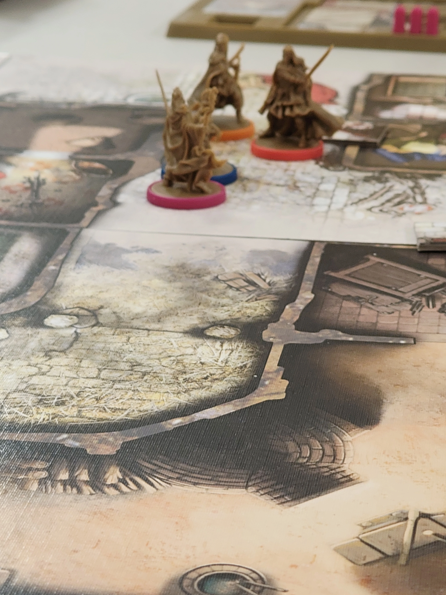
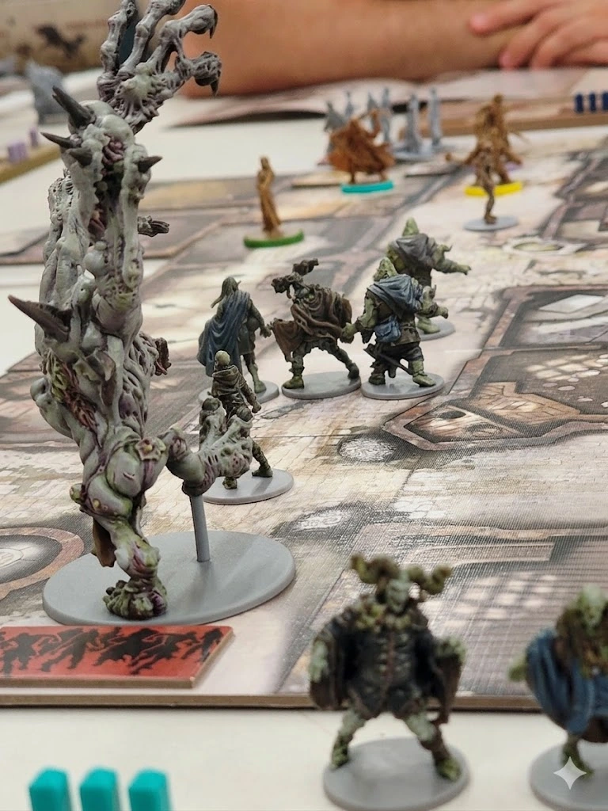
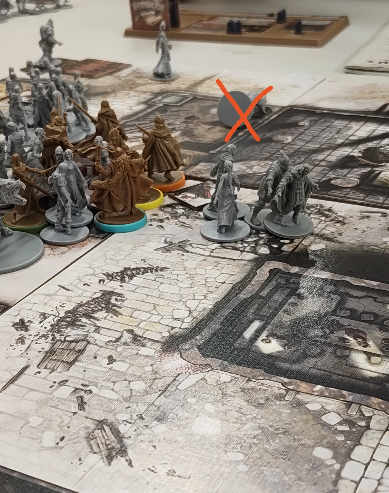

La mission :
Les rumeurs parlaient d’un village maudit, abandonné depuis que la peste noire avait frappé… ou du moins, c’est ce que les survivants racontent entre deux gorgées de bière avariée. Aujourd’hui, c’est à notre équipe de huit fous furieux : deux nains, un charognard, une mage, un magicien, un elfe qui tire de loin (et qui court encore plus loin), un paladin et un guerrier, de vérifier si les morts y reposent vraiment en paix. Spoiler : non. Mais bon, quand on a accepté une mission intitulée Nettoyage express : Abominatroll inclus , on s’attend à ce que ça parte en sucette. Et clairement, c'est parti en sucette.
Exploration du village abandonné :
La troupe avance prudemment dans les ruelles pavées du village, où les maisons de pierre, à moitié effondrées, semblent murmurer des secrets oubliés. Les vitraux brisés des églises laissent filtrer une lumière sinistre, tandis que des traces de sang séché rappellent que les habitants ont depuis longtemps cédé leur place aux hôtes indésirables. « On dirait que le boucher a fermé boutique… mais les clients sont toujours là », commente le charognard en pointant du doigt une porte arrachée, couverte de griffures. L’air est lourd, chargé de l’odeur âcre de la décomposition et de cette peur tenace qui colle à la peau des aventuriers.
Premiers combats :
Soudain, un grognement sourd brise le silence. Une horde de rôdeurs émerge des ombres, leurs pas traînants résonnant comme un glas. « Encore des fans de marche lente… » soupire l’elfe en bandant son arc… depuis une position très en retrait. Mais avant qu’il ne puisse tirer, un runner surgit comme une flèche, fonçant droit vers la mage. « Oh, celui-là a bu son café ce matin ! » s’exclame-t-elle en esquivant de justesse, avant de lancer un sort qui réduit le sprinteur en un tas de chair fumante. Les autres rôdeurs, moins vifs mais tout aussi affamés, se font tailler en pièces par les deux nains, qui semblent prendre un plaisir particulier à les envoyer valdinguer dans les décombres. « Un de moins, dix mille à venir… », murmure le guerrier en essuyant sa lame. Après des heures de combat acharné, l’équipe est exsangue : les nains boitent, la mage et le magicien ont les doigts carbonisés par leurs sorts, l’elfe a épuisé son carquois (et sa dignité), et le paladin… eh bien, il prie. Il prie Beaucoup.

L'Ôdieux acte :
C’est dans ce chaos organisé que l’un des nains, déjà affaibli par une morsure de rôdeur, tourne le dos à ses alliés pour couvrir leur retraite. Mal lui en a pris : ses "alliés" se sont passé l’arbalète vampirique comme un jouet maudit, et les carreaux sifflant dans l’air pour lui transpercer le dos. Le nain, en retrait pour couvrir leur retraite, pose un genou a terre, trahi par ceux-là mêmes qu’il protégeait. « Putain, les gars, on était à -1 PV tous les huit, là ! » grogne-t-il en s’effondrant, les yeux rivés sur ses "camarades" qui viennent de lui voler ses derniers points de vie… et son honneur. Son dernier souffle s’échappe avec un grognement : « Au moins, ici, pas de zombies… ni de tireurs embusqués. » Son esprit privé de point de destin se rend au paradis des nains.
Tagazok à lui.
Alors que les rôdeurs encerclent la troupe, un jet de dés catastrophique déclenche l’ire de l’Abominatroll qui a spawn un peu avant. « Qui a osé déranger ce monstre ?! » hurle le guerrier, tandis que la mage, désignée bouc émissaire, est projetée vers les mâchoires du colosse. « Bon… au moins, elle aura droit à une tombe VIP au Hall of Fame », murmure le charognard en ramassant ses dés. Merci pour ton service la mage 🫡 Une fois le plateau nettoyé, la compagnie déclenche le troisième objectif. Par chance (et surtout une faveur de la part du MJ 😘), deux points de destin sont trouvés, permettant de ressusciter les combattants tombés au combat, les arrachant des cieux pour retrouver le champ de bataille infesté de corps en décomposition et de bêtes féroces à trucider gaiement. Les héros ressuscités se relèvent, un peu groggy, mais ravis : « Retour à la case zombie… et cette fois, on évite les arbalètes dans le dos ! »
Épilogue :
Après 3h de combat acharné, de trahison et d'actes manqués... Le boss final tombe, planté d'un carreau entre les deux yeux. Dormez sereinement, peuple des Alpes-Maritimes. L'invasion zombie n'aura pas lieu. Enfin... pas aujourd'hui.
Cette quête a été sponsorisé par l'arbalétrier de Black Plagié qui a pour devise : "Arbalètes : l’arme préférée des lâches, des héros, et de ceux qui aiment tirer dans le dos. Disponibles en version vampire ou classique, selon vos besoins en trahison."
Dormez sereinement, peuple des Alpes-Maritimes. L'invasion zombie n'aura pas lieu. Enfin... pas aujourd'hui.
Un grand merci à Benjamin le MJ Et aux participant de cette joyeuse boucherie !!
